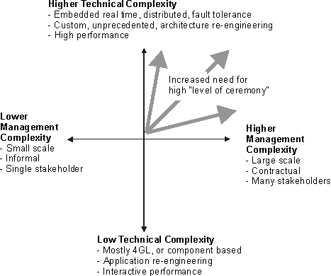

| Introduction to RUP |
|
What is the Rational Unified Process, or RUP?The heart of RUPAt its heart, the Rational Unified Process® (RUP®) is about successful software development. There are three central elements that define RUP:
The Rational Method Composer (RMC) platformOver many years of development effort, the RUP has evolved into a rich process engineering platform platform called Rational Method Composer (RMC). RMC enables teams to define, configure, tailor and practice a consistent process. The key elements of the platform are:
Who should use RUP?If you depend on your ability to develop and deploy software which is critical to the success of your organization, then RUP will help you. The RUP product is developed with two primary groups of users in mind:
Software development practitioners can find guidance on what is required of them in the roles defined in RUP. A practitioner working on a RUP software engineering project is assigned one or more of the roles defined in RUP, where each role partitions a set of tasks and work products that role is responsible for. Guidance is also given on how those roles collaborate in terms of the activities that are required to enact the configured process (referred to as the Delivery Process). Process Engineering practitioners can find guidance on defining, configuring, tailoring and implementing engineering processes. The RUP product family provides a number of tools that enable and simplify defining, configuring and tailoring the engineering process. A number of views are provided with the RUP product that are focused on different groups of software engineering practitioners. Configuring RUP for your project?One of the core practices behind RUP is iterative and incremental development. This practice is also good to keep in mind as you start with RUP: don't try to "do" all of RUP at once. Adopt an approach to implementing, learning and using RUP that is itself iterative and incremental. Start by assessing your existing process and selecting one or two key areas you would like to improve. Begin using RUP to improve these areas first and then, in later iterations or development cycles, make incremental improvements in other areas. Visit the following links to learn more about these topics:
Why should I use RUP?RUP provides a software development practitioner with a standards-based yet configurable process environment. That process environment:
At its heart, RUP is a collected body of software engineering practices that are continually improved on a regular basis to reflect changes in industry practices. As a Stakeholder in a software development project, RUP provides you with an understanding of what can be expected from the development effort. It provides a glossary of terminology and an encyclopedia of knowledge to help you communicate your needs effectively with the software development team. For a software development practitioner, this process environment provides a central, common process definition that all software development team members can share, helping to ensure clear and unambiguous communication between team members. This helps you to play the part expected of you in the project team by making it clear what your responsibilities are. As a general software engineering reference, RUP provides a wealth of guidance on software development practices that novice and experienced practitioners alike will find valuable. Even if you are a lone code-warrior, you will find RUP a useful mentor in helping you to build world-class software. As a manager or team leader, RUP provides you with a process by which you can communicate effectively with your staff and manage the planning and control of their work accordingly. As a Process Engineer, RUP provides you with a good architectural foundation and wealth of material from which you can construct your process definition, enabling you to configure and extend that foundation as desired. This will save you enormous amounts of time and effort that would otherwise be required to create such a process definition from scratch. When should I use RUP?
 RUP can be used right from the start of a new software project, and can continue to be used in subsequent development cycles long after the initial project has ended. However, the way in which RUP is used needs to be varied appropriately to suit your needs. There are a few considerations that will determine when and how you will use different parts of RUP:
Where can I learn more about RUP?The following resources can help you to get up to speed and master RUP quickly:
|
© Copyright IBM Corp. 1987, 2006. All Rights Reserved. |